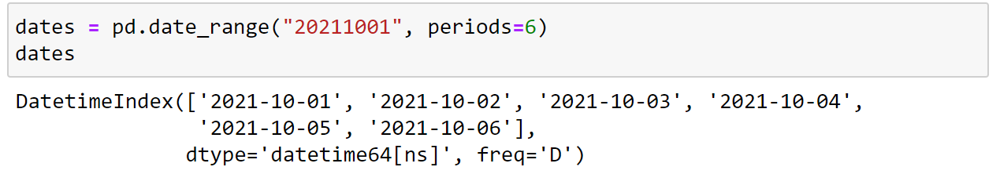
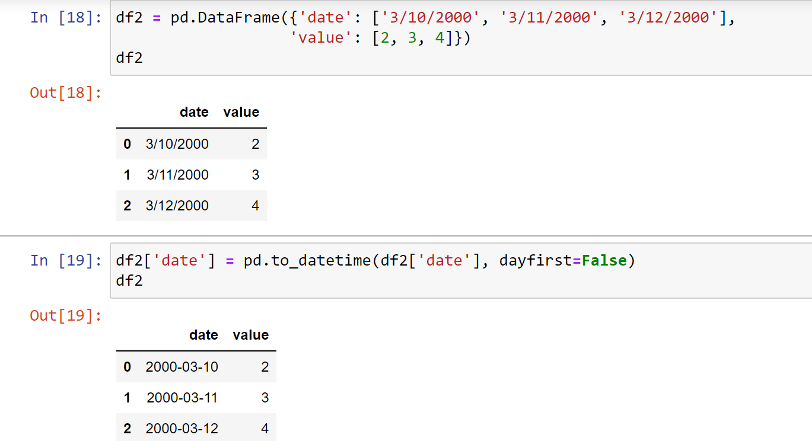
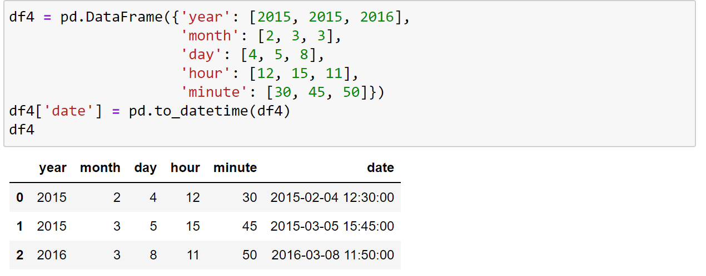
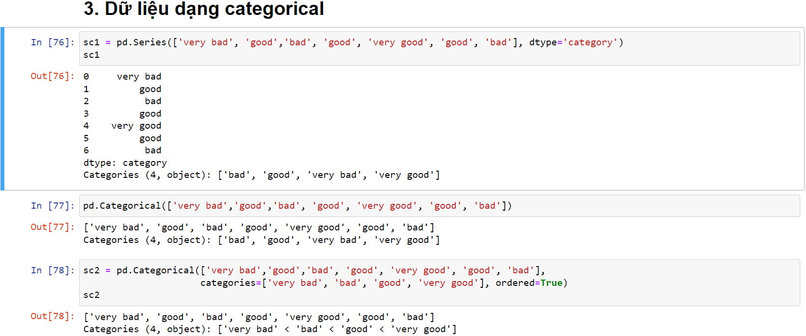
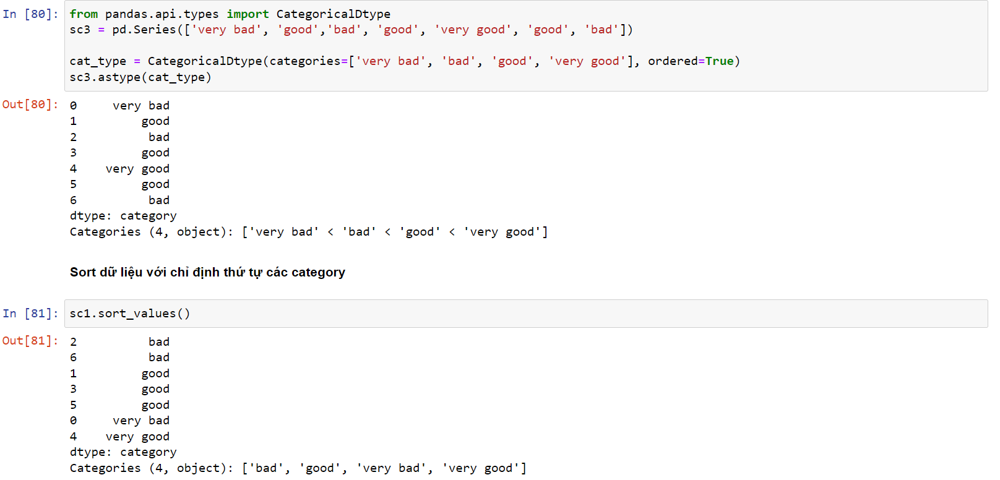
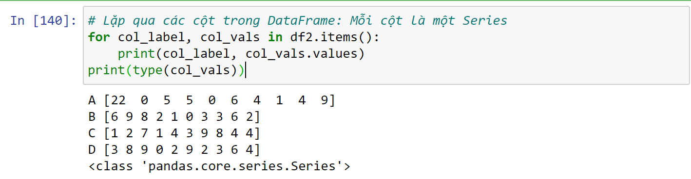
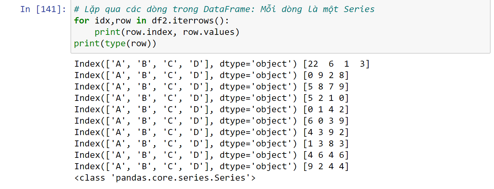

Pandas thông dụng
Menu ==> Python Cheat Sheet1/ pd.read_csv
Cú pháp : pd.read_csv('...')
Đọc những cột được chỉ định: usecols=['col1','col2','col3'] or usecols=[0,1,2]
Chế độ mã hóa: encoding="utf8"
Nếu file không có header thì thêm thuộc tính để đánh index cho header: header=None
Nếu muốn hàng nào làm header thì : header=1 hay header=2,.....
Gán data type: dtype={'col1':str,'col2':int32}
index_col = vị_trí_cột => nếu muốn dùng một cột nào đó làm index
Ghi file csv
df.to_csv('/path/name.csv', index=False)
index = False => ko tạo cột index lúc ghi file
df.to_csv('/path/name.csv', index=True ,index_lable='IDX')
df2.to_csv('/path/df.csv', mode ="a", index = False, header=False) => mode "a" :append, thêm dữ liệu vào file csv hiện có ( thêm theo chiều dọc ), header= False ==> ko thêm header vào
2/ df.dtypes : Kiểm tra kiểu dữ liệu các cột
3/ df.isnull().sum() : Tính số giá trính null của mỗi cột
4/ df.fillna(12345) : Thay thế giá trị Na bằng giá trị nào đó
5/ df.apply(function) : tính toán cho từng hàng hoặc cột (mặc định là cột)
Thêm thuộc tính : axis=1 nếu tính theo hàng
axis=0 là mặc định, tính theo cột
một số hàm numpy hỗ trợ: np.sum, np.sqrt ,.... =>df.apply(np.sum) ; df.apply(np.sqrt)
Tự tạo function để apply
def standardize(col):
return (col - col.mean())/(col.max()-col.min())
rating_std = new_df.apply(standardize)
df.T : Nghịch đảo hàng thành cột, cột thành hàng
nlargest , nsmalest
df.nlargest(10, columns='counts')
df.nsmalest(10, columns='counts')
df.groupby(['value1','value2'])["value3"]
Ví dụa = df.groupby(["Category"])["Order ID"].unique() ==> trả về các giá trị unique
a = df.groupby(["Category"])["Order ID"].nunique() ==> đếm số lượng unique
a = df.groupby('Category')['Profit'].sum() ==> Nhóm song rồi tính tổng theo cột 'Profit'
df1.groupby(['A']).groups
list(df1.groupby(['A']).groups.keys())
df1.groupby(['A']).groups[21]
Lấy 1 group : df1.groupby(['A']).get_group("tên group cần lấy")
idx = df1.groupby(['A']).groups[20]
df1.loc[idx]
Tạo dataframe _ create dataframe
Cách 1: pd.DataFrame(data,index=[...],columns=[...]) ==> Tạo dataframe
Cách 2: Tạo dataframe với dict
d = {'A':b[0], 'B':b[1], 'C':b[2], 'D':b[3]}
df2 = pd.DataFrame(d, copy=True)
===> copy True để tách biệt dataframe với dict truyền vào
data.sort_values("Name", axis = 0, ascending = True, inplace = False, na_position ='last')
Sort theo tên cột or theo list tên cột ["Name 1","Name 2]( Nếu giá trị Name 1 bằng nhau, thì xếp theo Name 2)
axis=0 =>Sort theo cột
ascending = True => tăng dần , "False" giảm dần
inplace= True => sắp xếp trực tiếp trên dataframe, "False" sẽ trả về dataframe mới
nếu có giá trị na_position thì xếp ở đâu : "last" , "first"
df.dropna(axis=0, how='any', thresh=None, subset=None, inplace=False)
thresh = None hoặc integer => số lượng giá trị khác NaN trong dòng hoặc cốt ít nhất là bao nhiêu để không drop
user_ratings.dropna(thresh=10,axis=1).fillna(0)
Select row with conditions: truy cập có điều kiện dataframe
- df.loc[df['column_name'] == some_value]
- df.loc[df['column_name'].isin(some_values)]
- df.loc[(df['column_name'] >= A) & (df['column_name'] <= B)]
- df.loc[(df['column_name'] >= A) | (df['column_name'] > B)][['Cột 1','cột 2']]
- df.loc[df['column_name'] != some_value]
- So to select rows whose value is not in some_values: df.loc[~df['column_name'].isin(some_values)]
Khởi tạo Series với Pandas
pd.Series([5, 1, 3, 7, np.nan, 6])
pd.Series([5, 1, 3, 7, np.nan, 6],dtype='string')
pd.Series([5, 1, 3, 7, np.nan, 6]).astype('string')
data là giữ liệu cho series
index là các chỉ số index, nếu đặt ko thì mặc định là từ 0
dtype : đặt kiểu dữ liệu cho data, không có thì mặc định là object
name: đặt tên cho series
copy = True or False, nếu False thì gán trực tiếp mảng trong data cho series, false thì dữ liệu trong data sẽ được copy ra và gán cho series mảng trong data và dừ liệu trong series tách biệt lẫn nhau
 series
series
Một số thao tác trên series
ds_hv.str.lower()
ds_hv.str.count('Nam')
ds_hv.str.upper()
ds_hv.str.lower()
ds_hv.dropna()
ds_hv = ds_hv.dropna().str.strip().str.lower().str.replace('-', ' ').str.replace('_', ' ') ===> thay thế các ký tự các dòng trong series
seriesDate time pandas
dates = pd.date_range("20211001", periods=6)
Chuyển đổi dữ liệu sang dạng datetime: pd.to_datetime(df['date'] , dayfirst=False) ==> dayfisrt = False có nghĩa là
df3['date'] = pd.to_datetime(df3['date'], format="%Y-%d-%m %H:%M:%S")
Use case 3:
 Nếu set_index bằng cột date, có thể truy cập theo năm bằng hàm df.loc['2015'] date timeKiểu dữ liệu categorical
Tự định nghĩa 1 categorical
 category categoricalNối 2 dataframe
pd.concat([a1,a2], axis=1) Nối theo cột, axis=0 nối theo hàng, mặc định ko truyền gì thì axis=0
concatGán index cho một series sẵn có
a = pd.Series([5, 1, 3, 7])
a.index = list("1234") => đánh index cho series a từ 1 đến 4
seriesReset Index
a = pd.Series([5, 1, 3, 7])
a.reset_index() Hoặc
s.reset_index(drop=True, inplace=True)
Nếu không có drop=True, thì index mới sẽ ở ngoài index cũ, drop= True để loại bỏ index cũinplace=True => chỉnh sửa trực tiếp trên series hiện tại, ko trả về seri mới reset index
Set index dataframe
df.set_index('Tên cột') => biến một cột thành index
Series value: lấy các giá trị của series hay dataframe
s.values ,df.values , df.to_numpy()
valuesSeries describe: lấy cột giá trị của series
s.describe() => lấy thông tin tổng quát của series như: count, mean, std, max, tứ phân vị
valuesLấy size, chiều của dataframe, thông tin tổng quát
df.shape() , df.ndim , df.size
df.info() , df.describe()
shape infoTruy cập series, gán, thêm cho series
s[4] lấy giá trị tại index = 4
s[4] = 5 , gán phần tử tại index 4 bằng giá trị 5, nếu index 4 chưa có trong series => sẽ tự động thêm index 4 và gán giá trị
valuesiloc : => lấy giá trị tại 1 vị trị nào đó, vị trí luôn đánh số bắt đầu từ 0
s.iloc[i]
df.iloc[1:3][['cột 1','cột 2']]
df.iloc[1:4,1:3] ==> dòng 1=>4, cột 1=>3
values truy cậploc : => lấy giá trị tại 1 vị trị nào đó, ví trị dựa vào index (index bằng số hay gì đó tùy vào lúc tạo series)
s.iloc[i]
valuesSeries Slicing , dataframe slicing
tương tự như list ,series hay dataframe cũng có thể slicing bằng cách s[1:3] , s[0:10:2] , s[::2] ,..., s['a':'f']
slicing dataframe slicinghead, tail : lấy những giá trị đầu, cuối => dùng cho series hay dataframe đều được
head(), tail() ,head(10), tail(10),....
head tailTruy cập cột của dataframe
df['tên cột'], df.ten-cot, df[['tên cột 1','tên cột 2','tên cột 3']]
df[1:5][['cột-1','cột-2']]
dataframe columnLấy danh sách cột, dòng dataframe
df.columns ( df.keys() cũng được ) or df.columns.values ==> df.columns.values trả về list còn df.columns trả về object
df.index or df.index.values ==> df.index.values trả về list còn df.index trả về object
danh sách cột column danh sách dòngTruy cập phần tử của dataframe
df['tên cột'][index]
df.at[1,'A'] => dòng 1 cột A
df.iat[1,1] => dòng 1 cột 1
dataframe columntạo dataframe
Cách 1: a = np.random.randint(0, 10, size=(10,4))
df1 = pd.DataFrame(data=a, index=range(1,11), columns=list('ABCD'), dtype='uint8')
Cách 2: d = {'A':[1,2,3,4], 'B':[4,5,8,0], 'C':[4,9,8,7], 'D':[6,5,8,6]}
df2 = pd.DataFrame(d, copy=True)
Đổi tên cột dataframe
df.columns = ['tên cột mới 1', 'tên cột mới 2']
đổi tênDuyệt dataframe : df.items() , df.intertuples()
  duyệtGán phần tử dataframe có điều kiện
df[df > 3] = 3 => tất cả phần tử > 3 sẽ được gán = 3
df.replace([0,9],[10,11]) => thay thế các giá trị 0 bằng 10, 9 bằng 11
df.where(df > 5,5, inplace=False) => các phần tử lớn hơn 5 thay thế bằng 5
gán điều kiện thay thếCác phép toán trên dataframe
df1/df2 => chia các phần tử ở vị trí tương đương cho nhau ( lưu ý index 2 dataframe phải giống nhau )
df + 1 => cộng 1 cho tất cả phần tử
df + np.array([1,2,3,4]) ==> cộng theo hàng các phần tử tương ứng vị trí trong array
operator tính toándf2 df1.copy() => copy dataframe
Thêm xóa cột dataframe
df.pop('Tên cột')
df['New column'] = data
df.insert(loc = 2,column ="tên cột",value =np.arrange(10)) => loc là vị trí cột